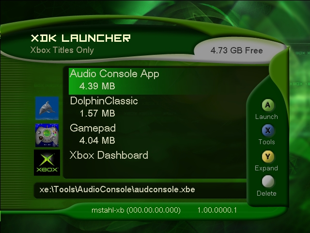
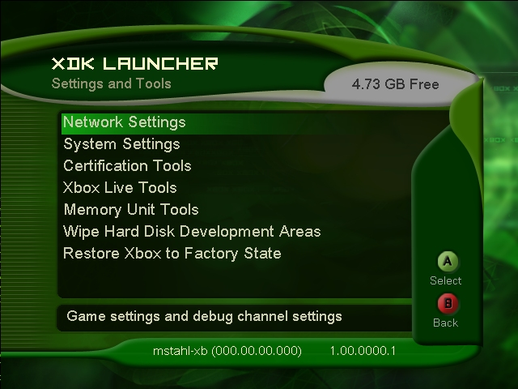

The XDK Launcher is the GUI for your Xbox console. When no disc is present in the DVD drive, powering up the Xbox displays the XDK Launcher. From here, you can launch games from the DVD or the hard disk, modify your console's settings, manage your hard disk, memory units, and Xbox Live accounts, and so on.
The following topics are discussed in this section:
The XDK Launcher screen is the first menu displayed upon powering up the Xbox. This interface provides developers with the following information:

Illustration An image of the XDK Launcher screen.
Whenever XBE files within the root and subdirectories of the xe: drive are modified (created, deleted, renamed, or resized), the XBE list is automatically updated within the launcher. Either the directional pad or the left thumbstick may be used to navigate the list of available XBE files. Upon highlighting the desired XBE to launch, you may press the A controller button to initiate a reboot into the XBE. Once the selected XBE is running on the Xbox, a simple reboot will return the Xbox to the XDK Launcher. Many of the samples support rebooting back to the launcher by pressing L+R+Black.
Pressing the X controller button will launch the Settings and Tools menu (see below).
The Y controller button toggles between expanded view and collapsed view. When viewing the files in expanded view, all of the XBEs on the xe: drive are displayed in XBE listing with secondary title XBEs following the primary title XBE. If it exists, the icon for the primary title XBE is displayed next to the XBE's name. Additionally, the amount of hard disk space used by the title is displayed with the primary title XBE. Note that this is the space taken up by the XBE and all other related files in its folder. In collapsed view, only the primary title XBE is displayed—this is the default view.
When a primary title XBE is selected, pressing the White controller button will prompt for deletion of the selection. Note that this will delete everything in the subfolder(s) associated with the XBE, including any files that may have been copied into those folder(s) subsequent to installing that XBE. Some items, such as the Xbox Dashboard XBE or XBEs on a DVD cannot be deleted.
The Settings and Tools menu includes options for adjusting network and system settings, certification tools, Xbox Live tools, memory unit tools, wiping the hard disk development areas, and restoring the Xbox to the default factory state. This menu can be reached by pressing the X controller button while in the XDK Launcher screen. To return to the XDK Launcher screen, press the B controller button.
Note You must set up the Xbox's machine name before you can use any of the (remote) Xbox tools. Until you select a machine name, the Xbox will not be addressable from your development system. See the Network Settings section for more information.

Illustration An image of the Settings and Tools screen.
The following menu items are discussed in this section: